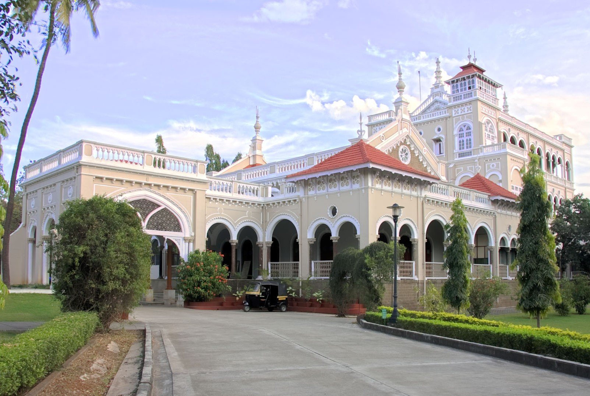

YOUR TRAVEL GUIDE
The eighth largest metropolises in India, Pune is located in the state of Maharashtra. It is the second largest city in the state after Mumbai, and is an important city in terms of its economical and industrial growth. Once the hometown of Marathas and a centre of power for the Maratha Empire, the presence of the numerous edifices in Pune links to its rich and glorious past. The city leads as the ‘veritable heartland’ of cultural Maharashtra. Pune also has made its mark as the educational epicenter winning itself the sobriquet, ‘The Oxford of the East’. Not just that, it has a growing industrial hinterland, with information technology, engineering and automotive companies sprouting. The city is known for cultural activities like classical music, spirituality, theatre, sports, and literature. Pune is a pleasant travel getaway destination to spend a quiet holiday.
Shaniwarwada

Shaniwarwada is a historical fortification in the city of Pune in Maharashtra, India. Built in 1732, it was the seat of the Peshwas of the Maratha Empire until 1818, when the Peshwas lost control to the British East India Company after the Third Anglo-Maratha War.
Address: Shaniwar Peth, Pune, Maharashtra 411030
Hours:
Open · Closes 5:30PM
Architectural style: Maratha Empire
Year built: 1732
Aga Khan Palace
The Aga Khan Palace was built by Sultan Muhammed Shah Aga Khan III in Pune, India. Built in 1892, it is one of important landmarks in Indian history. The palace was an act of charity by the Sultan who wanted to help the poor in the neighbouring areas of Pune, who were drastically hit by famine.
Address: Gandhi National Memorial Society, Aga Khan Palace Road, Pune, Maharashtra 411006
Hours:
Open · Closes 5:30PM
Year built: 1892
Designated as world heritage site: 2003
Phone: 020 2970 8575
Sinhagad

Sinhagad is a hill fortress located at around 36 km southwest of the city of Pune, India. Some of the information available at this fort suggests that the fort could have been built 2000 years ago. The caves and the carvings in the Kaundinyeshwar temple stand as proofs for the same.
Address: Sinhagad Ghat Road, Dist Pune, Thoptewadi, Maharashtra 411025
Hours:
Open · Closes 6PM
Start: Chhatrapati Shivaji Terminus railway station
Controlled by: Maratha Empire
Raja Dinker Kelkar Museum
The Raja Dinkar Kelkar Museum is in Pune, Maharashtra, India. It contains the collection of Dr. Dinkar G. Kelkar, dedicated to the memory of his only son, Raja. The three-storey building houses various sculptures dating back to the 14th century.
Address: No. 1377/78, Kamal Kunj, Bajirao Rd, Natu Baag, Shukrawar Peth, Pune, Maharashtra 411002
Hours:
Open · Closes 5:30PM
Phone: 020 2448 2101
Mulshi Dam
Mulshi is the name of a major dam on the Mula river in India. It is located in the Mulshi taluka administrative division of the Pune district of Maharashtra State. Water from the dam is used for irrigation as well as for producing electricity at the Bhira hydroelectric power plant, operated by Tata Power.
Opened: 1927
Location: Pune District, Maharashtra; India
Spillway capacity: 1892 m3/s
Height: 48.8 m
Impound: Mula River
Total capacity: 0.0523 km3 (0.0125 cu mi)
Sarasbaug-Peshve Park
These parks are in Punecity near Swargate. Gardens are full of lush green lawn. It also has a jogging track. There is a small hillock in the garden surrounded by the lake. There is a Ganesh temple on this hillock. The place is famous as ‘Talyatala Ganapati’. Peshve park is next to Sarasbaug. Previously, it was famous for its zoo. Boat rides are available here.There is mini train called “Phulrani” which attracts the kids most.
Address: Pinecity, near Swargate; India
Hours:
Open · Closes 5:30PM